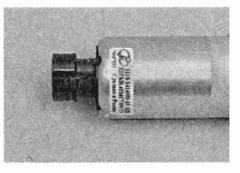
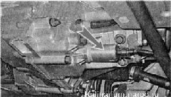
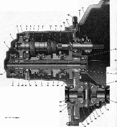

Коробка передачОсновные данные для контроля, регулировки и обслуживания
* Сальники левого и правого приводов не взаимозаменяемы, так как имеют разное направление маслосгонных канавок. Моменты затяжки резьбовых соединений
На автомобиле установлена механическая пятиступенчатая двухвальная коробка передач. Она смонтирована вместе с главной передачей и дифференциалом в единый агрегат, корпус которого состоит из трех частей — картера сцепления, картера коробки и задней крышки. Места соединений картеров и крышки уплотнены бензомаслостойким герметиком. Первичный вал коробки передач выполнен в виде блока шестерен. Шестерни первичного вала — ведущие, находятся в постоянном зацеплении с ведомыми шестернями передач переднего хода, установленными на вторичном валу. Все элементы вторичного вала съемные. Вторичный вал — полый, с радиальными отверстиями в местах установки шестерен для смазки наружной поверхности вала. Шестерня пятой передачи вращается на втулке. Ведущая шестерня главной передачи и ступицы синхронизаторов установлены на шлицах вала. Передние концы валов опираются на роликовые подшипники, а задние — на шариковые. Дифференциал - двухсателлитный, предварительный натяг его подшипников регулируется подбором толщины регулировочного кольца, установленного под наружным кольцом подшипника дифференциала. Па корпусе дифференциала установлено задающее кольцо датчика скорости автомобиля. Датчик установлен на картере коробки передач. Для контроля уровня масла в картере коробки передач установлен указатель уровня (измерительный щуп). Механизм переключения передач оборудован устройством с электрическим приводом, исключающим ошибочное включение передачи заднего хода вместо первой передачи. Исполнительный элемент этого устройства — соленоид.  Он установлен в нижней части картера коробки передач, слева. Выключатель блокировки заднего хода установлен на рычаге переключения передач, под рукояткой. 
Коробка передач: 1 — задняя крышка картера коробки передач; 2, 44 - гайка; 3 - ведущая шестерня пятой передачи; 4 — упорная пластина; 5, 40 — стопорные кольца подшипника; 6 — шариковый подшипник первичного вала; 7 — ведущая шестерня четвертой передачи; 8 — картер коробки передач; 9 первичный вал; 10 - ведущая шестерня третьей передачи; 11 — ведущая шестерня второй передачи; 12 — шестерня заднего хода; 13 — ведущая шестерня первой передачи; 14 — роликовый подшипник; 15 сапун; 16 — сальник первичного вала; 17 - картер сцепления; 18 — роликовый подшипник вторичного вала; 19 — маслосборник; 20 — ведущая шестерня главной передачи; 21 — кольцо датчика скорости автомобиля; 22, 32 — сальники привода; 23, 30 — роликовые конические подшипник дифференциала; 24 — датчик скорости автомобиля; 25 — коробка дифференциала; 26 — сателлит дифференциала; 27 — ось сателлитов; 28 — полуосевая шестерня; 29 — ведомая шестерня главной передачи; 31 — регулировочное кольцо; 33 ведомая шестерня первой передачи; 34 — синхронизатор первой и второй передач; 35 — ведомая шестерня второй передачи; 36 — ведомая шестерня третьей передачи; 37 — синхронизатор третьей и четвертой передач; 38 — ведомая шестерня четвертой передачи; 39 — шариковый подшипник вторичного вала; 41 — втулка; 42 — ведомая шестерня пятой передачи; 43 — синхронизатор пятой передачи |